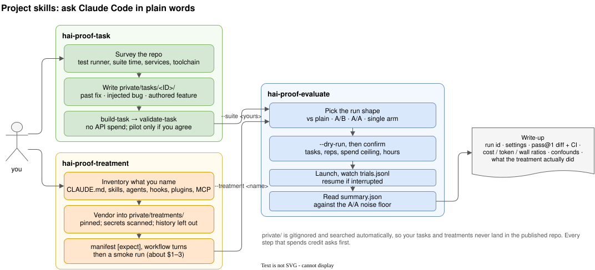

Skills: tasks, treatments and evaluations
Open the repository in Claude Code and ask in plain words. Three project skills in
.claude/skills/ turn your repos into tasks, your Claude Code setup into a treatment, and both into an
evaluation you can trust.

| Ask for | Skill | Result |
|---|---|---|
| "make a task from our repo" / "from this bug-fix commit" | hai-proof-task | a built, validated task in private/tasks/<ID>/ |
| "package my setup / this plugin as a treatment" | hai-proof-treatment | a smoke-tested treatment in private/treatments/<name>/ |
| "evaluate X against plain Claude Code" / "is this significant?" | hai-proof-evaluate | a run, its report, and a write-up against the noise floor |
private/ is gitignored and searched automatically (extra_tasks_dirs,
extra_treatments_dirs), so tasks from private code and your own configuration never land in the public
repository. Keep it as its own git repository if your team shares it. Every step that spends API credit asks
first.hai-proof-task: a task from any repository
- Ask only what it can't find out: the repository (a URL your own git can clone, or a path), the id
(prefixed so it can't collide with
B*/F*, e.g.ACME-B1), bug or feature, and optionally a commit, issue or PR. It says once what leaves your machine: the snapshot goes to the execution host, transcripts to the API. - Survey the repository in a scratch clone: its test runner, how long the relevant tests take (target under a minute), services (grading runs with no network), toolchain, and private dependencies (installs have no credentials).
- Choose the source, best first: a real past fix whose commit added a failing test; an injected bug on an untested path; an authored feature with hand-written tests.
- Write the files:
task.toml(source SHAs, install, test commands, limits by level, a suite tag of your own), an optionaltask.Dockerfilefor other toolchains, aprompt.mdthat never mentions hidden tests,hidden_tests/that test behaviour through the public API, and an optionaluser.mdbrief. - Build and validate with no API spend until
validate-taskprints[ok]. - Pilot, if you agree: three plain runs, which should pass at least twice; levels and limits come from the median.
hai-proof-treatment: your setup as a treatment
- Ask what to include. Not "everything": each piece adds context cost, and a mixed bundle can't say which part helped. It then inventories only what you named, at user and project level.
- Never copy history, projects, todos, memory,
.credentials.json,settings.local.jsonor anything holding a token. It scans what it is about to copy for secrets and stops to ask if it finds one; treatments have no secret channel. - Build the bundle: CLAUDE.md, skills, agents and commands into
user/orproject/; only the settings keys that are part of the treatment (hooks, env, plugins, output style; never model or permissions, which would be a confound); hooks rewritten to their in-container paths; plugins vendored at the exact installed version into a local marketplace, with source, commit and licence recorded; MCP servers inproject/.mcp.jsonwith pinned installs; CLI tools as[[requires]]and[setup]. - Declare
[expect]: the plugins, MCP servers and skills that must load, so a treatment that silently didn't load is excluded instead of measured. - Decide how it gets used. Plain prompts often never trigger a treatment. If real users invoke it
explicitly, script that with
prompt_prefixor[workflow] turns, and record why in the manifest. - Verify: a dry run, then (after asking) a
--suite smoke --mode lightningrun of about $1–3. Both arms should pass, no trial should be excluded, and the transcripts should show the treatment acting.
hai-proof-evaluate: run it and read it
| Question | Run |
|---|---|
| Does X beat plain Claude Code? | run --treatment X |
| Is Y better than our current setup X? | run --arm-a X --arm-b Y |
| How noisy is this host, suite and model? | run --arm-a plain --arm-b plain |
| Does X work at all on these tasks? | run --treatment X --no-control |
- Plan: suite or tasks, reps (small effects need full mode),
--limit-scale 3for slower treatments,--max-spendalways on, a pinned--cli-versionfor runs you'll compare. For interviewing treatments, the interview suite with its required flags, plus a standard run with nobody answering to check the treatment doesn't stall. - Dry-run and confirm: arms, tasks, agent runs, spend ceiling and hours (about 15 hours for the standard suite in full mode on one host).
- Launch in the background and watch
trials.jsonl; resume an interrupted run with the original arguments. - Read: a pass-rate difference is real only if its interval excludes zero and it is larger than
the A/A noise; otherwise "no detectable difference at this size", not "no effect". Check every trial is
ok, whether limits decided outcomes, whether the treatment acted at all, and whether its subagents used another model. - Write up: run id, settings, pass@1 A vs B with interval and sign p, cost/token/wall ratios with intervals, confounds, and what the treatment did or didn't do in the transcripts.